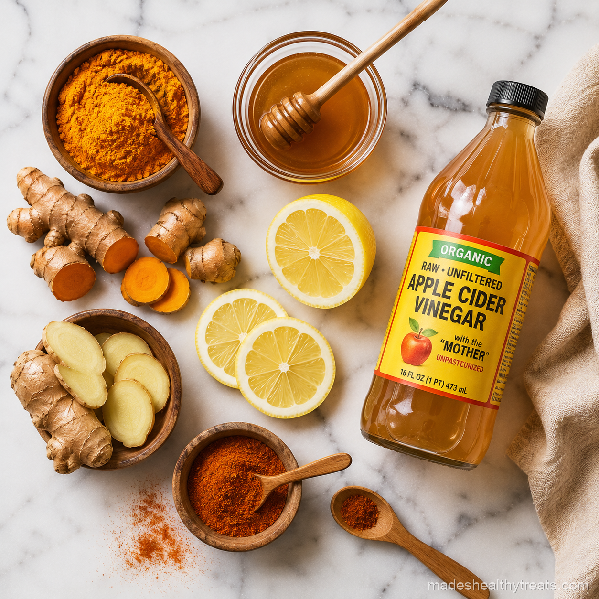

The Wellness Shot Benefits I Actually Care About
When people ask me about wellness shot benefits, I always separate the real ritual from the juice bar sparkle. A wellness shot is simply a concentrated sip made from ingredients like ginger, turmeric, lemon, apple cider vinegar, wheatgrass, or beetroot. It is not a replacement for sleep, meals, or common sense, but it can be a beautiful way to start the day with intention.
What A Wellness Shot Really Is
A wellness shot is smaller than juice and stronger in flavor. It is meant to be taken quickly, usually one to three ounces, because the ingredients are potent. Ginger brings heat, turmeric brings earthy anti inflammatory support, apple cider vinegar brings tang, and wheatgrass brings that unmistakable green intensity.
My Morning Routine
Most mornings I take one shot before breakfast, then follow it with water. If I feel a tickle in my throat, I choose the ginger immunity shot. If my body feels achy, I choose the turmeric golden shot. If digestion feels slow, I reach for the ACV detox shot.
Who Should Start Slowly
If you are sensitive to spicy food, have reflux, take blood thinning medication, or have blood sugar concerns, I would start gently and ask a professional if needed. Concentrated ingredients can be helpful, but more is not always better.

I have learned that the best wellness habits are the ones that still feel kind on a normal Tuesday morning.
How I Link The Shots To Real Life
The ginger immunity shot is my winter friend, the turmeric golden shot is my recovery helper, the apple cider vinegar detox shot is my digestion reset, the wheatgrass energy shot is my coffee backup, and the beet performance shot is what I love before walks. I use them based on what my body is asking for, not because I think one bottle can fix everything.
My Honest Verdict
The wellness shot benefits are real when the habit is realistic. They help me feel awake, intentional, and connected to my body first thing in the morning. They work best as a small daily support beside real meals, water, sleep, and the kind of routine you can actually keep.
The Ritual Matters Too
The ritual matters almost as much as the ingredients for me. Taking a wellness shot makes me pause before the day starts moving too fast. I stand at the counter, take one small glass seriously, drink water afterward, and check in with how I feel. That pause is not a clinical benefit, but it changes my morning. It reminds me that I am allowed to begin the day by caring for myself before answering messages, making breakfast for everyone else, or rushing into work mode.
How I Avoid Overdoing It
I avoid overdoing wellness shots by rotating them instead of stacking them all at once. I do not take ginger, turmeric, apple cider vinegar, wheatgrass, and beet in one heroic gulp. I choose one based on what my body needs and let that be enough. More ingredients do not automatically mean more benefits. Sometimes the most mature wellness choice is stopping before a good habit becomes too intense to keep. That is the version that actually lasts in my kitchen.
I also pay attention to how a shot feels after I drink it. If ginger feels too hot, I reduce it. If apple cider vinegar feels too sharp, I dilute it more. If turmeric feels heavy, I add extra lemon. That kind of adjustment is not failure, it is how a recipe becomes yours. The wellness shot benefits I trust most are the ones that come from listening carefully instead of copying someone else perfectly.
You Might Also Like

Does a Smoothie a Day Actually Help You Lose Weight? I Tried It for 30 Days
I replaced my rushed breakfast with one green smoothie every morning for 30 days and tracked what really changed.
Read more →
What Happens to Your Body When You Drink Green Smoothies Every Day
I explain the simple body changes I noticed and the science that makes daily green smoothies make sense.
Read more →
The 7 Biggest Smoothie Mistakes That Are Ruining Your Results
I made these smoothie mistakes myself before I learned how to blend for energy, fullness, and real results.
Read more →Made's Note
Think of a wellness shot as a tiny morning message to your body. Keep it kind, keep it diluted when needed, and let consistency do the heavy lifting. When I think about wellness shot benefits, I think about real mornings, real kitchens, and the small choices that help us feel at home in our bodies.